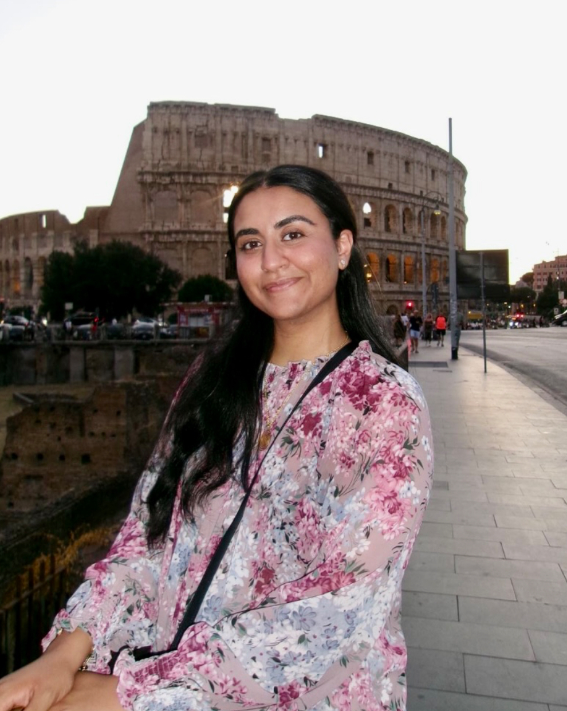
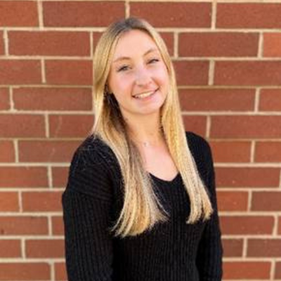

Our Team
Waheeda Samady, MD, MSCI
Project Lead
Lurie Children's Hospital
Hodan Jibrell, MPH
Research Coordinator
Northwestern University - Feinberg School of Medicine

Sara Malik, MPH
Research Coordinator
Lurie Children's Hospital
Corwin Rolling, Jr., BS
Research Assistant
Lurie Children's Hospital

Hannah Grosspietsch, BS
Administrative Assistant
Center for Food Allergy & Asthma Research (CFAAR)
Ruchi Gupta, MD, MPH
Research Mentor
Center for Food Allergy & Asthma Research (CFAAR)
Linda Van Horn, PhD, RD
Research Mentor
Northwestern University - Feinberg School of Medicine
Richard McGee, Jr., PhD
Research Mentor
Northwestern University - Feinberg School of Medicine
Linda Herbert, PhD
Research Mentor
Children's National Health System